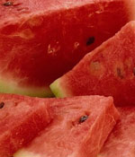
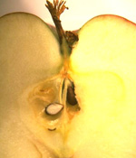
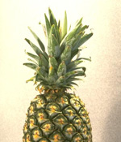

Oxidation and Reduction – In human body
A  lion share of the human population suffers from the illnesses arising from the bad lifestyle. Most of these diseases are caused by the presence of certain molecules called FREE RADICALS inside the body. Now, a free radical is an atom which is unstabilized by the removal of the electrons from it's outer most shell. Most of us have noticed the change in color when a sliced apple is placed in contact with the air for a very less time interval. It's nothing short from an oxidation. Oxidation is the process of an atom by which it loses it's electron and become a free radical. These oxidation reactions take place also inside the human body. They might affect our DNA or cell cytoplasm. Free radicals can bring old age early and can cause a simple cold to dreadful cancers.
To prevent our body from the actions of the free radicals we need the anti-oxidants in our body. when the anti-oxidants enter the body, they satisfy the free radicals by donation of their own electrons. When receiving the electrons the free radicals stop their action over the body cells. Anti-oxidants made from vitamins and minerals are thus meant for preventing oxidation. Some of these anti-oxidants are produced within the body and some of them must be supplied to the body through food. The vitamins required in this context are Vitamin E, Vitamin C and Beta Carotine. Vitamin E : Its world widely accepted that in a healthy man there must be 15 IU (International Unit) of Vitamin E and in woman the amount is 12 IU. Fatty acids, Sunflower oil, oil from fishes are rich in its content of Vitamin E. Vitamin C : Vitamin C is found mainly in Grapes, Cabbage, Leafy Vegetables, and strawberries. We must be able to add to our body about 100g of Vitamin C. Beta Carotine : Liver, Cabbage, Bronchology, Tomato and Carrot are rich in the content of Beta Carotine. These are converted into Vitamin A inside the body.
Anti -Oxidants can prevent most of the diseases caused by the free radicals. They help in preventing cardiac disorders and illnesses due to old age. Regular exercises can be helpful in preventing the formation of free radicals in the body. Water, Vitamins, Minerals, Rest etc are also necessary. The diseases caused by the free radicals are mainly cardiac related disorders, cancers, Diabetes Mellitus, Rheumatic fever, Atsma, Alzheimer's disease etc. Free radicals are generated inside the body from the habits of consuming poisonous or old food materials, fast food culture and consumption of mainly sugary food and non vegetarian items. These cause to unbalanced nutrition.
When vitamins and minerals decrease in the body the free radical count goes up in the body. Mental Strains, polluted air and water, poisonous food, UV radiations etc can add much to their count. The effect is that these defects in the body are transferred to the next generations too. So what we must do is :
- Reduce mental strain.
- Protect ourselves from UV rays.
- Avoid exposure to polluted surfaces.
- Consume more and more vitamins and minerals.
- Consume more fibrous foods.
- Consume Omegas fatty acids containing fishes.
- Drink a minimum volume of 2 L of water per day.
- Avoid consuming food by boiling again and again.
- Practice of Yoga is a good methodology adopted to reduce the mental strain.
Now what remains is the truth that the mending of our lifestyle is so critical on the planet. We must be able to provide the body with the necessary vitamins and minerals which is synthesised into anti-oxidants.
Dr. George T NainanNainan's clinic,Palakkad.